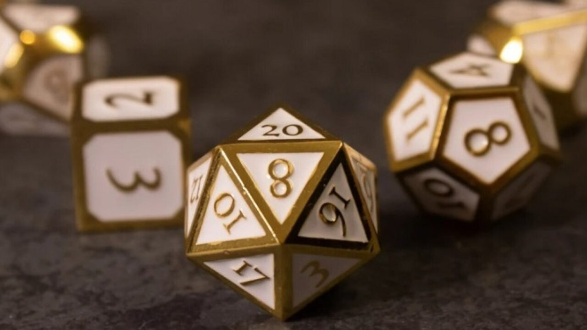
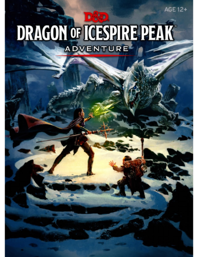
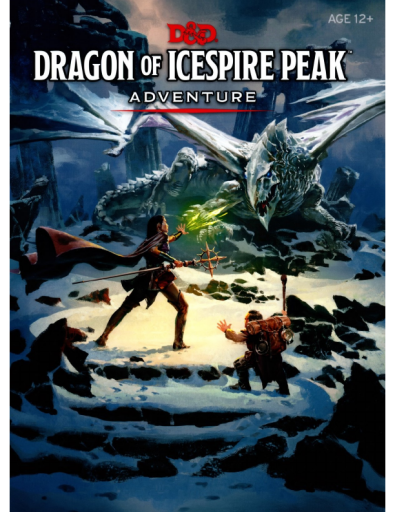

What Do You Need to Start?
From the beginning of DnD, all you needed was a pencil, paper, dice, and some rules. Nowadays we are very fortunate to have the internet and you only need a single device like a laptop or phone to get started. It may sound overwhelming but the core requirements are the same. You will need a page for your character, some virtual dice, and a copy of the rulebook. That’s it. Your group will also need one Dungeon Master, or DM to run the game for you. That person doesn’t play the game as a character, instead they control all the monsters, people, and the whole world your group will play in.
Character Sheet
This sheet is a single page that you record everything about the person you are playing as. It might look like a lot of information, but it really is just your equipment like armor and weapons, your character’s race (like human or elf), and their skills and abilities (like how strong or smart your character is). You can fill all this out yourself by following along with the rulebook or you can use an online tool such as D&D Beyond to build it for you (recommended for new players).
↓ Click one of these ↓
 DnD Beyond Character Builder
DnD Beyond Character Builder
Dice
In Dungeons and Dragons you play with 7 different dice, called because of how many sides are each dice. They are a d4, d6(the normal dice), d8, d10, d12, d20, and a d100 (which is just another 10 sided die for 10-100). You can roll dice online, although once you start getting more serious it is more fun to roll actual dice which you can buy a set of for $6 on amazon.
(You can click the image below to got to Amazon's site.)
Rulebook
There is only book you need to start playing- the DnD Player’s Handbook (5th Edition or 5e). This book retails for around $50, but don’t worry! That is only for people who like having high-quality, hardbound, books in person. The actual content of the book is available online for free. In fact, the link below contains the full pdf!
5e Player's HandbookHaving a "Dungeon Master"
Lastly, there will be one person who has a bigger responsibility to lead everyone else on an epic adventure. This person will need dice and the players handbook, but they will also need a few more things. When it comes to adventures, you can run a campaign that is pre-built or make your own (called homebrew). Pre-built campaigns are available for purchase as well as a few free ones you can find online (or by clicking the samples below). Homebrew campaigns are much more difficult as you have to build a world, a story, people, towns, and monsters all for your characters. There are resources to help with this, such the "Monster Manual" (a guide to monsters and their stats), or "The Dungeon Master’s Guide" (a book on how to be a DM). Regardless of the path you choose, it is the role that requires the most experience, so the person your group decides to be the DM should be familiar with the game or at least watch videos on how to run a campaign.
 

Additional Resources
Now you might be thinking, there has to be more than that. And you’d be right! The things above are only the bare essentials you need to get started (and other people of course). If you decide you enjoy playing, you and your group can improve your setup with things like, playing music in the background, having whiteboards, using miniatures, home-made or storebought maps, and a screen for the DM to hide behind, etc. In addition you can purchase the " Starter Set" or "Essentials Kit" which contain dice, an adventure, some basic rules and other helpful items for your first game, for $20 or $25 respectively.